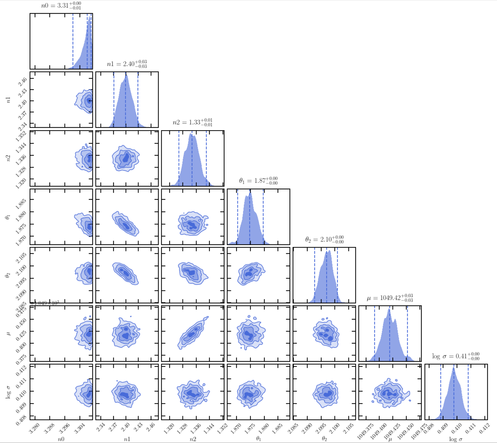

Tutorial¶
This chapter illustrates how to run the wide angle PSF fitting using elderflower. elderflower can be run in two ways: in a functional way or thourough a yaml configuration file. We use a 800x800 cutout image in the test directory (test/cutout.fits) as an example. The data is observed by the Dragonfly telescope with the SloanR band filter.
We first set out the object name, the working directory and the filter in use:
obj_name = 'test'
work_dir = './test/'
filt = 'r'
The object name can be arbitrary which is used for labeling. The working directory is where the fitting stores intermediate files and the fitting outputs. The filter is the band at which it will match with in the PANSTARRS star catalog. Available filters are ‘g’ or ‘r’ (note: case-insensitive).
Next we define the boundaries of the region intended to fit (patch):
bounds = ([100,100,700,700])
- The boundaries have the format of (in pixel coordinates):
[X min, Y min, X max, Y max]
Multiple boundaries can be passed in sequence as an Nx4 list or turples. Currently it only accepts square regions, so make sure the width and height are equal.
The following procedure can be run with functions step-by-step or through a configuration file.
1. Run with functions¶
(1) Detection¶
We first import the functions from elderflower.task:
from elderflower.task import Run_Detection, Match_Mask_Measure, Run_PSF_Fitting
The user needs to specify local path of the SExtractor executable, e.g.:
SE_executable = '/opt/local/bin/source-extractor'
The path can be retrieved by running which sex or which source-extractor. Make sure the correct SExtractor path is given, otherwise it will exit.
Run_Detection will then run SExtractor to generate a catalog for crossmatch {obj_name}_cat.fits and a first segmentation map {{obj_name}}_seg.fits.
ZP = Run_Detection('cutout.fits', obj_name, filt,
threshold=10, work_dir=work_dir,
executable=SE_executable,
ZP_keyname='REFZP', ZP=None)
The MAG_AUTO from SExtractor are used to group stars for different treatments according to their brightness. To convert flux into magnitudes it will try to find a zero-point ZP_keyname in the fits header. Alternatively one can pass a value by ZP if the value has been computed elsewhere.
Note: it will compute the zero-point using functions from
dfreduce.catalogues, if neitherZP_keynameorZPis available. In this case eitherref_catorapass_diris required. See API ofRun_Detection.
The below steps can be run given a SExtractor {obj_name}_cat.fits containing the following parameters:
NUMBER, X_WORLD, Y_WORLD, FLUXERR_AUTO, MAG_AUTO, MU_MAX, CLASS_STAR, ELLIPTICITY
and a segementation map {obj_name}_seg.fits in work_dir.
(2) Preparation¶
Match_Mask_Measure does all the fussy preparatory work, including:
crossmatch stars detected with PANSTARRS;
calculate color correction between filters;
empirically make up for unmatched stars by correcting saturation;
build a basement mask map for dim stars;
measure brightness
I(r_scale)at a specific radiusr_scale:
Match_Mask_Measure('cutout.fits',
bounds, obj_name, filt,
ZP=ZP, pixel_scale=2.5,
r_scale=12, field_pad=50,
use_PS1_DR2=False,
work_dir=work_dir)
The pixel scale of Dragonfly is 2.5 arcsec/pixel. The scaling radius r_scale is chosen to be out of inner saturation radius. The default value (12 pix, or 0.5 arcmin) works for a 7 mag star in r-band for Dragonfly. For brighter stars, a larger value is required to avoid saturation issue.
use_PS1_DR2 decides whether to cross-match with PANSTARRS DR1 (through vizier) or DR2 (through MAST request). The former method is done across the field of view, while the latter is done only for each patch. field_pad restricts the cross-match with paddings in both edges, which is only used when use_PS1_DR2=False.
Note: PANSTARRS DR2 contains more entries and more rigorous catalog values but are prone to fail in the query if one of patch is too large (> 0.6x0.6 deg^2). In this case it is recommended to set
use_PS1_DR2=False.
Match_Mask_Measure will generate several diagnostic plots if draw=True.
From top to bottom, these are:
A panoramic view of the image with intended regions marked in sequence.
MU_MAX vs MAG_AUTO to pick out & mask potential extended source
Color correction between the image filter and the PANSTARRS filter
Saturation corrected MAG_AUTO (MAG_AUTO_corr) vs original MAG_AUTO. Very bright stars missed in the crossmatch are manually added using MAG_AUTO_corr. The correction is more robust with larger/more crowded regions.
Log radius (in pixel) of aperture mask vs catalog magnitudes. The apertures are for masking dim stars.
Modified segmentation map.
1d profiles of stars <
mag_limit(default: 15 mag). The colors indicate the catalog magnitude.
(3) Fitting¶
Finally, Run_PSF_Fitting does the fitting work:
samplers = Run_PSF_Fitting('cutout.fits',
bounds, obj_name, filt,
mag_threshold=[13.,10.],
n_spline=3, n_cpu=4,
ZP=ZP, pad=100,
r_scale=12, r_core=24,
pixel_scale=2.5,
use_PS1_DR2=False,
work_dir=work_dir)
The PSF model is composed of a central Moffat core and a multi-power law aureole. We use a three component power law for the modeling of the aureole by setting n_spline=3. As n_spline increases, the time it takes to converge also increases.
Stars with magnitudes 13.5 ~ 10.5 will be modelled as MB (‘Meidum bright’) stars and rendered as stamps by Galsim in Fourier space. Stars brighter than 10.5 will be modelled as VB (‘Very Bright’) stars and rendered in real space.
r_scale and pixel_scale should be consistent with the previous step. The core part (within r_core =24 pix) of bright stars will be masked.
ncpu specifies the number of CPU in use (ncpu-1) when parallelization is available.
pad is the padding size accounting for bright stars near or outside borders. The actual region in fit is therefore [X min + pad, Y min + pad, X max - pad, Y max - pad].
Below shows the output cornerplot of the fitted parameters of the PSF aureole.
Below shows the output of the fitting (stars + background), the fitted bright stars and the data after subtraction of bright stars.

Run_PSF_Fitting returns a list of Sampler class which contains all the fitting info. Each item corresponds to the region specified in bounds in sequence.
2. Run with config.yaml¶
The fitting can also be run with a .yaml configuration file. The functions are wrapped ino a class berry. Parameters of Match_Mask_Measure and Run_PSF_Fitting can be provided through the .yaml file. In addition, parameters of Run_Detection can be provided as **kwargs to .detection.
from elderflower.task import berry
bounds = ([100,100,700,700])
elder = berry('cutout.fits', bounds,
obj_name='test', filt='r',
work_dir='./test',
config_file='config.yaml')
elder.detection(executable=SE_executable)
elder.run()
It will complete procedures above in the functional way and generate the same outputs.
3. Read fitting results¶
The fitting results are saved as a pickled file .res under work_dir. It can be read as a Sampler class through:
from elderflower.sampler import Sampler
sampler = Sampler.read_results('test/test-R-fit2p.res')
One can then plot the PDF by:
sampler.cornerplot(figsize=(12,12), title_fmt='.3f')
Plotting options can be changed by passing them as **kwargs of the function in dynesty.plotting.
To reconstruct the PSF, one can run:
from elderflower.utils import make_psf_from_fit
The psf can be visualized in 1D or 2D:
# Draw PSF in 1D
psf_fit.plot_PSF_model_galsim()
# Draw PSF in 2D
image_psf = psf_fit.image_psf.array
from eldeflower.plotting import LogNorm
plt.imshow(image_psf, norm=LogNorm(), vmin=1e-8, vmax=1e-5, cmap='viridis')
{kind=link}